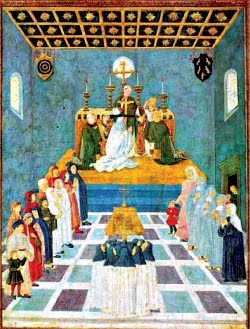
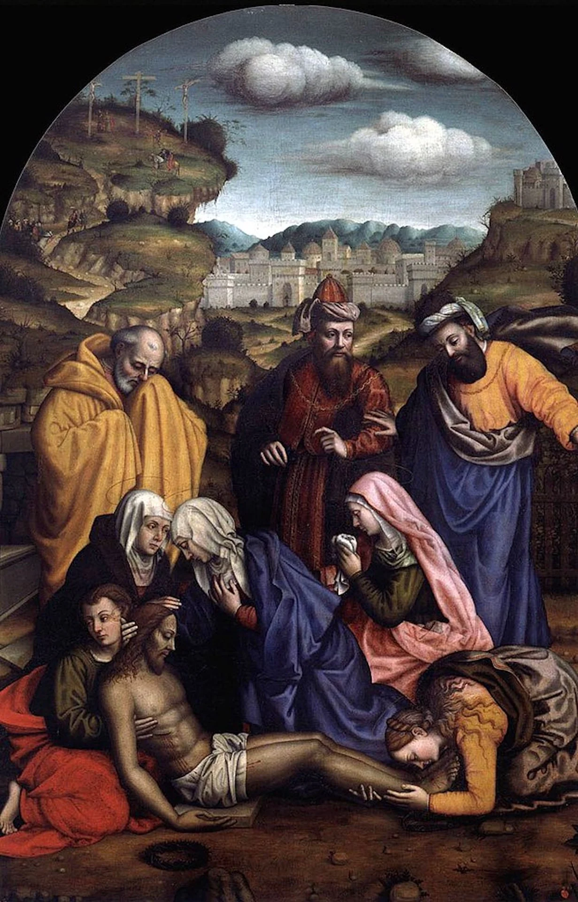

4 artiste
XV secolo
Nel Quattrocento, alcune donne riuscirono a emergere grazie a contesti familiari favorevoli o alla vita conventuale.
Apri il secoloEducazione civica · classi terze
Un percorso tra 101 artiste dal Quattrocento a oggi: biografie, opere, videopresentazioni degli studenti e approfondimenti.
A tutte le donne che la storia dell’arte ha reso invisibili, perché le loro voci tornino a farsi sentire e le loro opere possano finalmente occupare il posto che meritano.

4 artiste
Nel Quattrocento, alcune donne riuscirono a emergere grazie a contesti familiari favorevoli o alla vita conventuale.
Apri il secolo
9 artiste
Nel Cinquecento, tra Rinascimento e Manierismo, alcune donne ottennero formazione, committenze pubbliche e prestigio internazionale.
Apri il secolo
10 artiste
Nel Seicento le artiste si confrontarono con Barocco, ritratto, natura morta, scultura e illustrazione scientifica.
Apri il secolo
4 artiste
Nel Settecento il ritratto, il pastello e la cultura delle accademie offrirono nuove opportunità professionali.
Apri il secolo
36 artiste
Tra Ottocento e nascita delle avanguardie, le artiste ampliarono il campo della pittura, grafica, scultura e astrazione.
Apri il secolo
38 artiste
Nel Novecento e nella contemporaneità le artiste trasformarono radicalmente pittura, fotografia, tessitura, performance e installazione.
Apri il secolo